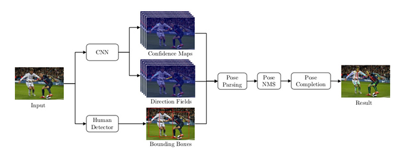
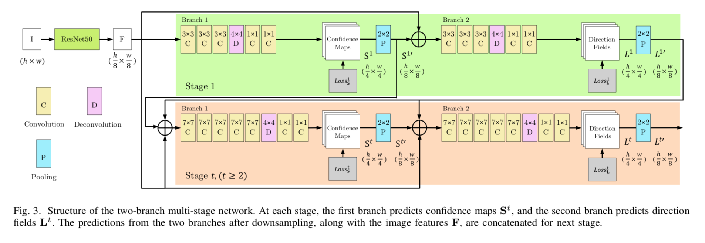
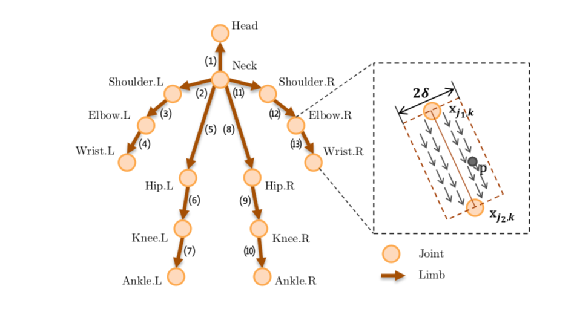
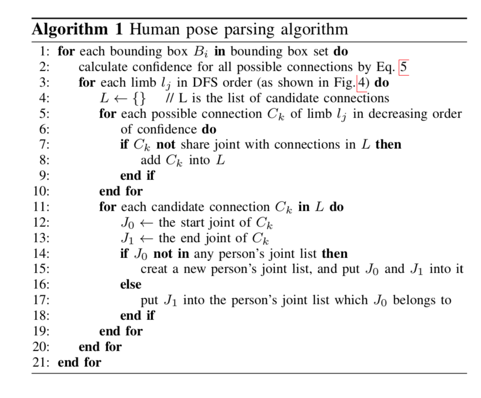
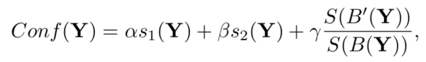
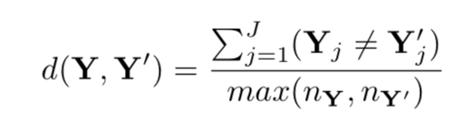
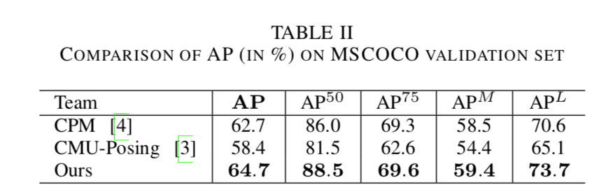
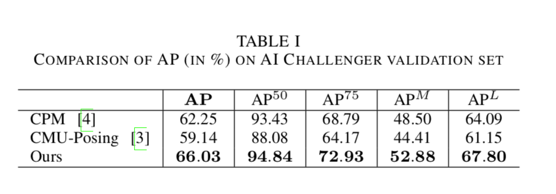

Bottom-up Pose Estimation of Multiple Person with Bounding Box Constraint
URL: https://arxiv.org/abs/1807.09972
一篇基于Bottom Up逻辑的pose estimation论文，但是实际上和刚读的PRN那篇论文比较类似可以理解为Top Down + Bottom Up结合的方法，论文所提的方法主要是OpenPose再结合人体框的检测来做多人的pose estimation。
论文所提方法的整个逻辑如下图,整体可以理解为OpenPose再加上人体BBox约束来提升group的效果：

- CNN Regression: 网络这个分支可以直接理解为OpenPose的逻辑，只是作者再OpenPose的基础上做了一些简单的修改比如更换backbone等，整体结构和逻辑和OpenPose基本是一致的：

 - Pose Parsing: 主要是利用CNN Regression分支的结果来解析pose，本论文所提方法在做pose parsing 的时候是每个人体框分别来做，不同于PRN，本文所提方法对于一个框是可以出多个人的结果的，具体贪心逻辑如下：
 - Pose NMS：主要是制定了一些规则来定义Pose的Confidence、Pose的距离：
Confidence:s1是pose所有点confidence均值，s2是pose所有connection confidence的均值，B‘是pose最小外接矩形面积，B是bbox面积

distance：
Experiments
作者只和OpenPose、CPM做了比较。。。。


Top Down和Bottom Up分别都有各自比较明显的缺点和优点，目前也陆续有两者结合的研究工作出现，感觉是一个可以去研究的内容。